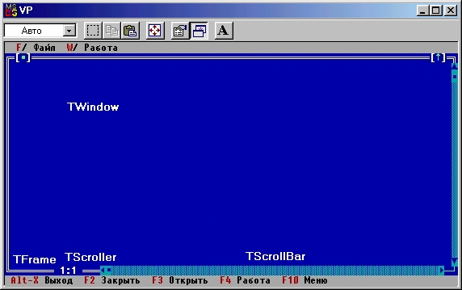
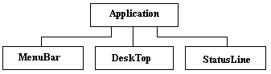

|
|
|
|
Z-упорядочение и дерево видимых элементов
Последовательное присоединение подэлементов к группе приводит к так называемому Z-упорядочению видимых элементов. Z-упорядочение - это трехмерная модель видимых элементов, в которой координаты X и Y определяют положение элементов на экране, а координата Z - порядковый номер элемента в группе. Например, на рис. 17.5 показана Z-модель элементов окна с рамкой и скроллером.
В этой модели каждый элемент можно представить в виде стеклянной пластины, накладывающейся на уже существующее изображение. То изображение, которое мы видим на экране, есть проекция трехмерной модели на плоскость XY. Трехмерный образ позволяет «взглянуть» на видимые элементы со стороны и увидеть порядок, в котором они присоединяются к группе.
Важно помнить, что любая группа визуализирует свои подэлементы в порядке, определяемом их Z-упорядочением. Для рис. 17.5 это означает, что сначала создается изображение рамки, очерчивающей все окно, затем на рамку накладываются полосы скроллера, потом - сам скроллер с текстом, а накрывает сверху все изображение и скрепляет его в единое целое прозрачная пластина TWindow.
Для того чтобы группа нашла связанный с ней список подэлементов, используется поле First, входящее в любой видимый объект. Это поле содержит NIL, если данный элемент - терминальный видимый объект; если этот элемент - группа, поле First содержит указатель на первый вставленный в группу подэлемент, т.е. на самый «нижний» элемент в смысле Z-упорядочения. Таким образом, цепочка ссылок First - Next образует дерево видимых элементов, так как каждый элемент Next может быть новой группой и в этом случае его поле First <> NIL.

Рис.17.5. Z-модель видимых элементов окна
Программа Turbo Vision всегда владеет строкой меню, строкой статуса и рабочей зоной экрана, а следовательно, имеет дерево видимых элементов, показанное на рис. 17.6.

Рис. 17.6. Основное дерево видимых элементов TApplication
Отметим, что деревья видимых элементов показывают принадлежность элементов, а не их иерархию в генеалогии объектов Turbo Vision, т.е. связи на рис. 17.6 определяют функциональную подчиненность экземпляров объектов Application, MenuBar, Desktop и StatusLine.
Деревья видимых элементов динамически изменяются в ходе работы программы. Они могут расти, если к программе присоединяются новые группы, или уменьшаться, если эти группы уничтожаются. В отличие от этого генеалогическое дерево объектов может только расти за счет создания потомков.
Все ветви дерева видимых элементов всегда заканчиваются терминальными видимыми объектами.
|
|
|
|